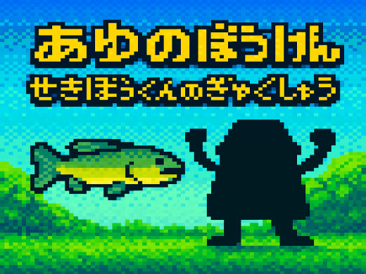
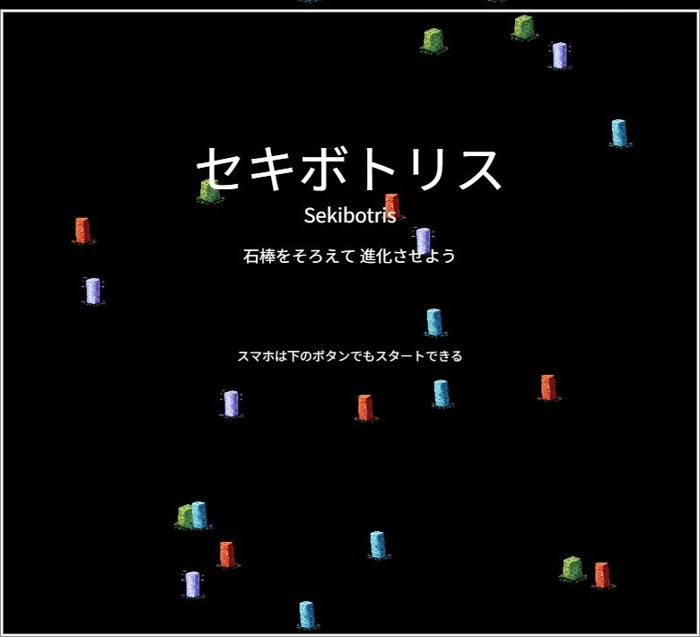
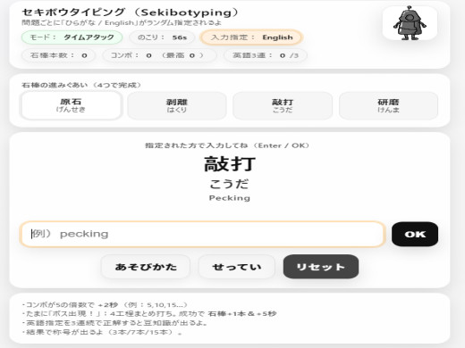
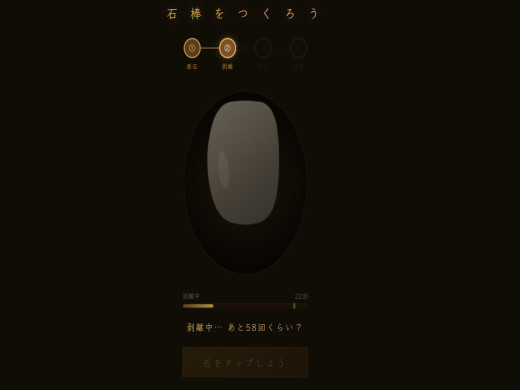
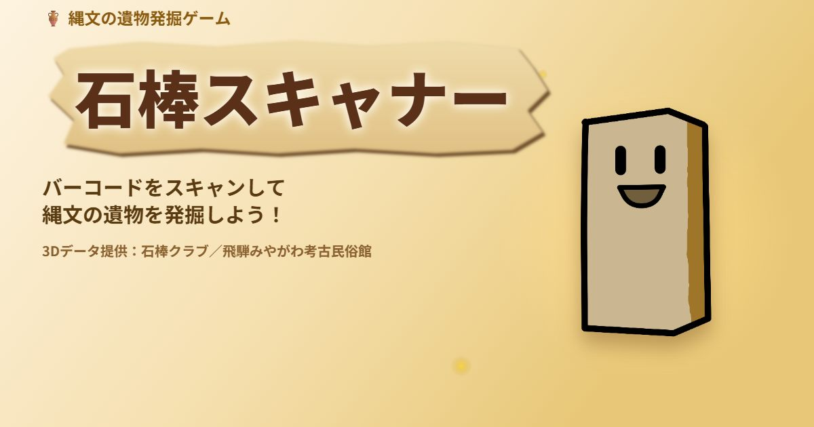

石棒で、遊ぶ。
博物館に行かなくても、石棒に出会える入口があっていい。
そう考えて、石棒をテーマにしたゲームをつくり続けています。
2023年のへなちょこRPGにはじまり、シューティング、パズル、タイピング、石棒づくり体験まで5本を公開中。いずれもブラウザで、無料で、登録なしで遊べます。累計プレイ回数は5,300回を超えました（2026年9月時点）。いまは6本目を開発中です。

せきぼうにたくせきぼう
2023年3月公開
すべてのはじまり。岐阜県飛騨市で大量に出土した石棒をモチーフにした、日本初にして世界初の石棒RPGです。
「最初の最初だけ頑張って作りましたが、途中からイベントも、さらにはエンディングもなにもありません」という潔い注意書き付き。それでも約2,000回遊ばれ、30件以上のコメントをいただきました。石棒クラブでいちばん愛されているゲームです。

あゆのぼうけん
せきぼうくんのぎゃくしゅう
2025年5月公開
日本初の石棒シューティングゲーム。主人公は石棒くん……ではなく、石棒の聖地・飛騨市の新鮮な鮎です。
ライバルとして石棒くんが立ちはだかります。ラスボスは誰なのか、遊んで確かめてください。PCなら移動は左右キー、攻撃はスペースキーです。

セキボトリス
2025年12月公開
石棒づくり × テトリス風パズル。原石（げんせき）→ 剥離（はくり）→ 敲打（こうだ）→ 研磨（けんま）の4工程をそろえると、石棒が完成します。
同じ石を4つそろえて消すこともできますが、4種類すべてをそろえる「石棒完成」を目指すのが本命。遊んでいるうちに、縄文時代の石棒づくりの流れが少しだけ身体に入ります。

セキボウタイピング
2025年12月公開
石棒づくり × タイピングゲーム。ひらがなと英語がランダムで指定される、石棒づくりタイムアタックです。
石棒の工程を4つ正解すると石棒が1本完成。たまにボスが出現します。あなたは石棒を何本つくれるでしょうか。

5分で縄文人！
石棒をつくろう！
2026年5月公開
世界初の石棒づくりゲーム。剥離・敲打・研磨の全3ステップをこなして、石棒を完成させます。
原石をタップして割り出し、ひたすら叩いて棒状に整え、丁寧に磨いて仕上げる。ただし叩きすぎると石が割れて最初からやり直しです。縄文人の集中力と根気を、5分で体感してください。

石棒スキャナー
開発中
いまつくっているのは、遺物の発掘ゲームです。身のまわりにあるもののバーコードをスマホでスキャンすると、縄文の遺物が出土します。
遺物は208種類、さらに激レアが3種。全211種のコンプリートを目指します。育成ゲーム「せきぼっち」も収録予定。まだ開発中なので、公開はもう少しお待ちください。
